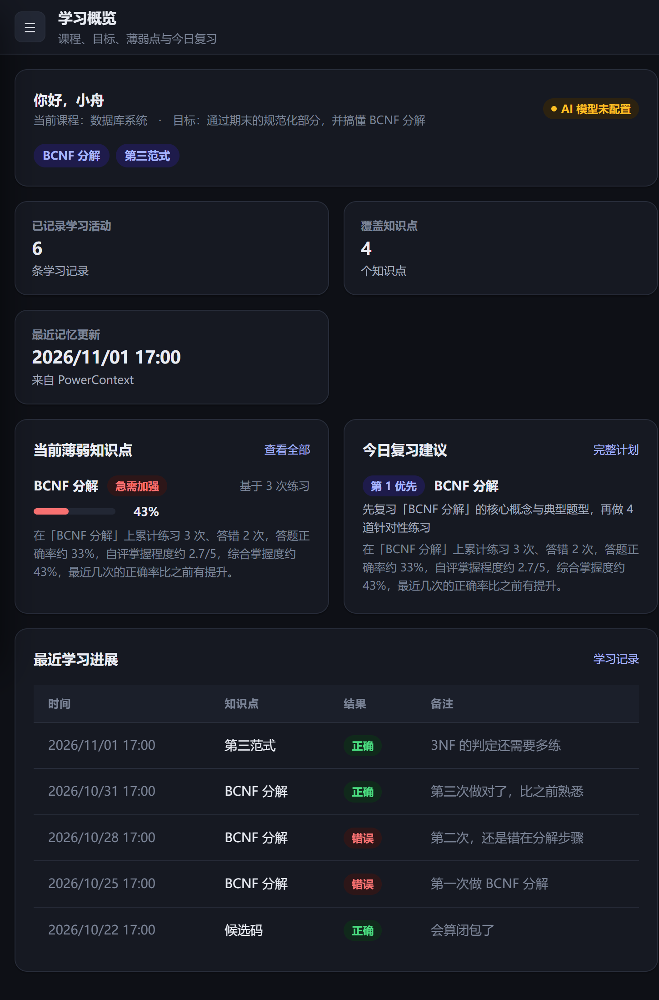
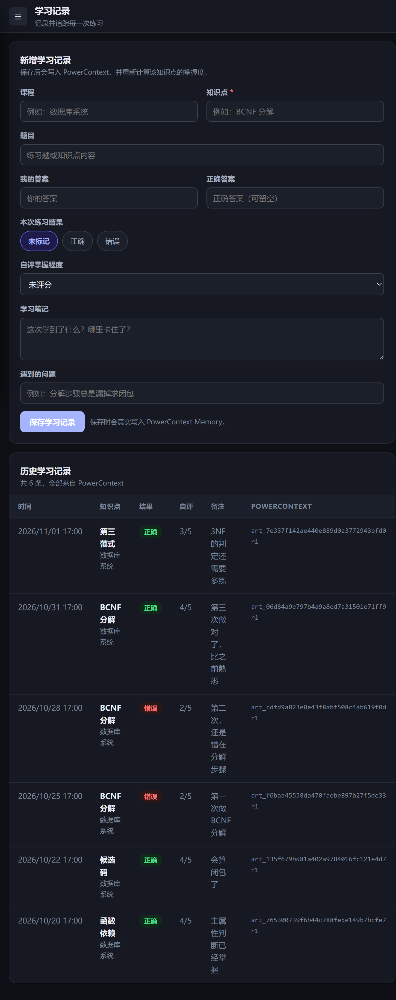
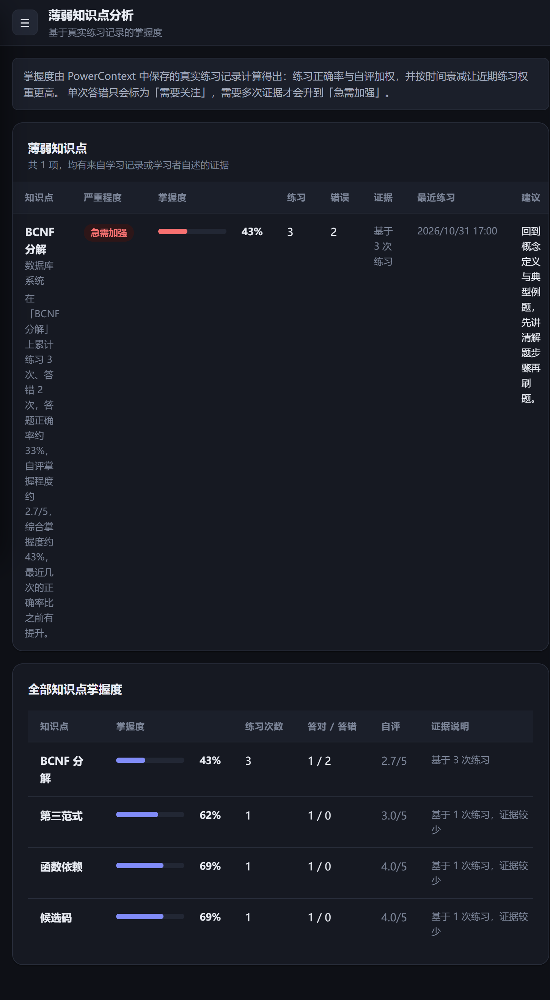
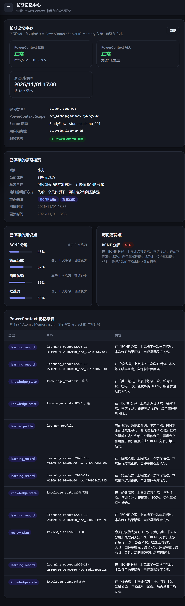
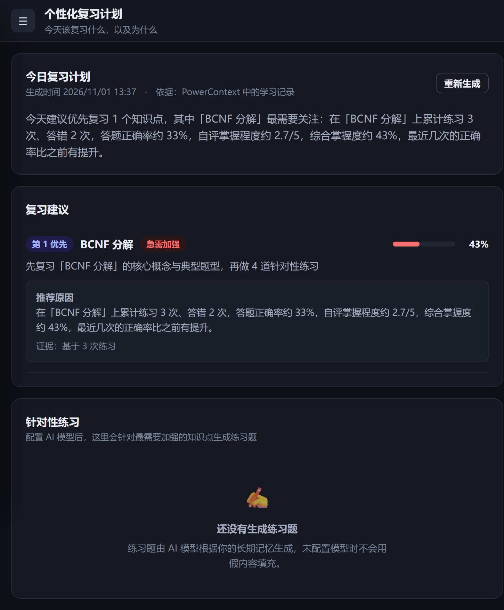
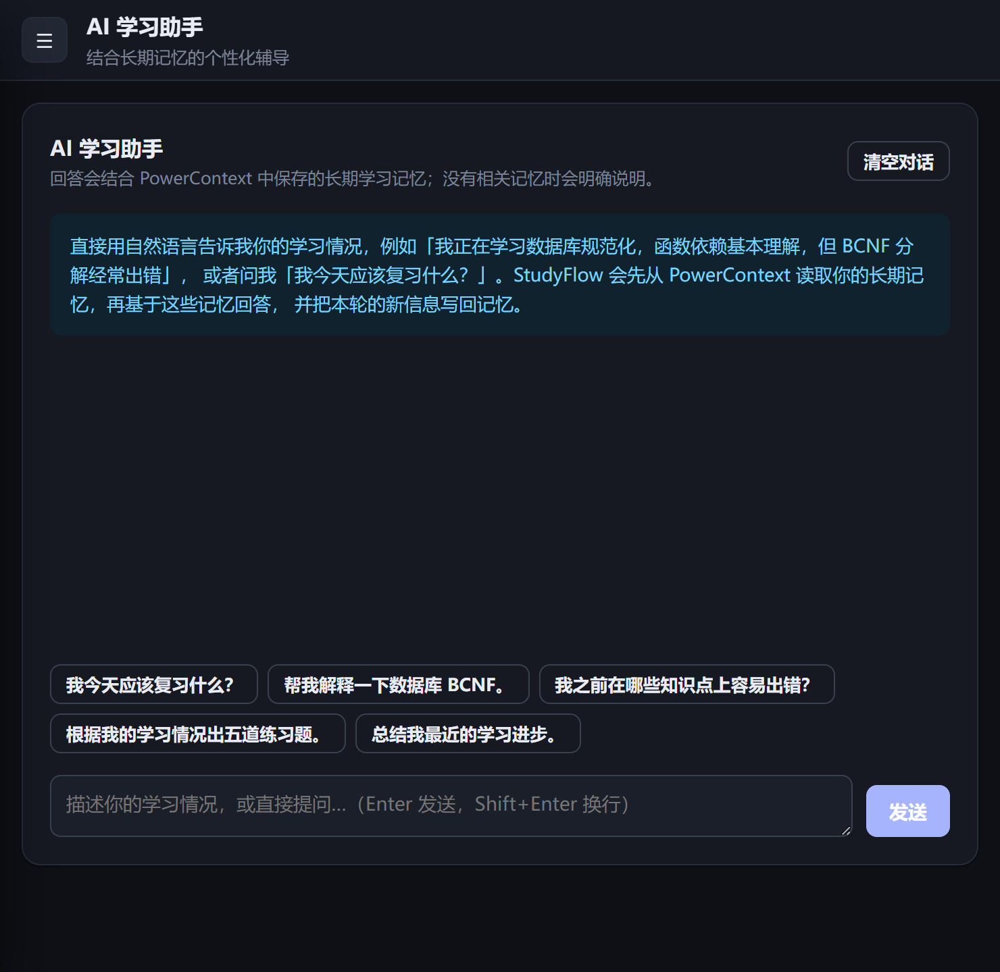

学习概览 Dashboard
当前课程、学习目标、活动数、薄弱知识点、最近进展与今日复习建议，一屏读完。
PowerContext 读OceanBase 大赛 · Qoder 赛道参赛作品
StudyFlow 把学习者的课程、薄弱知识点、历史练习、自评与复习进度 全部持久化在 PowerContext 中。关掉应用再打开，同一个学习者 ID 不需要重新介绍自己—— 系统会从 PowerContext 读回长期记忆，并解释“为什么建议复习这个”。
解决的问题
学习记录天然是跨会话的，但聊天窗口天然是会话内的。研究生的真实痛点不是“AI 答得不好”， 而是每次都要重新讲一遍自己是谁、哪里弱、练过什么。
核心功能
学习记录、薄弱分析、复习计划、记忆中心四个模块完全不依赖大模型—— 它们的每一个结论都能追溯到 PowerContext 里真实存在的条目。
当前课程、学习目标、活动数、薄弱知识点、最近进展与今日复习建议，一屏读完。
PowerContext 读自然语言提问或口述学习情况。回答前先召回记忆，回答后把新信息写回记忆。
PowerContext 读 + 写提交一次练习：题目、答案、对错、自评、笔记、卡点。写完立即能看到掌握度变化。
PowerContext 写每个知识点的掌握度、错误次数、证据明细与判定原因，逐列摊开给你看。
PowerContext 读今日复习优先级、每项推荐原因，以及针对薄弱点生成的练习题。
PowerContext 读 + AI逐条展示 PowerContext 中真实存在的记忆条目、artifact_id 与修订号——把“用了 PowerContext”变成可逐条核对的事实。
编辑学习档案、切换学习者 ID，并查看 PowerContext 与 AI 服务的真实连接状态。
PowerContext 读前端原生 HTML + CSS + ES Module，零构建步骤：评审克隆下来启动后端即可打开，不需要 npm install。
PowerContext 在项目中的实际作用
没有持久化记忆，StudyFlow 就只是一个换皮聊天框。PowerContext 在这里承担四件具体的、可核对的职责。
学习档案、知识点掌握状态、学习记录、薄弱点、复习计划，全部存为 PowerContext Atomic Memory 条目（art_… artifact）。
POST /v1/memory/remember
新会话通过学习者 ID 解析出同一个 Scope 并读回历史。进程重启、内存清空都不影响。
POST /v1/memory/entries/list
新一次练习不是追加重复记忆，而是原地修订原有条目，修订号递增、历史版本保留。
PUT /v1/scopes/{scope_id}/artifacts/atomic-memory/{artifact_id}
If-Match: "revision:N"
每个学习者 ID 在 PowerContext 中对应一个独立 Scope，并通过 scope binding 持久化映射。隔离由服务端 Scope 边界保证。
PUT /v1/scope-bindings
同一个知识点的状态在 PowerContext 里被反复修订，而不是堆出一堆重复条目：
用学习者 ID 解析 scope binding；没有则按 external_references 兜底查找，仍无则创建。
按记忆信封里的 key 定位条目：找到则 PUT 修订，找不到才 remember 新建。
用 entries/list + memory/search 拉回原始条目，组装成给模型或给人看的上下文。
掌握度、薄弱点、复习计划都是投影，随时可由事件日志重建，且不改写历史记录。
{
"scope_id": "scp_64abdjagdwpdaavfny60wy29hr",
"learner_id": "student_demo_001",
"entry_count": 12,
"learning_records": 6,
"entries": [
{ "kind": "learner_profile", "key": "learner_profile",
"artifact_id": "art_6c8e74ff18f24a9a819adb910aa32e68", "revision": 1 },
{ "kind": "knowledge_state", "key": "knowledge_state:BCNF 分解",
"artifact_id": "art_3d57279cae3a4f5a8f34d407dc8dc12a", "revision": 4 },
{ "kind": "knowledge_state", "key": "knowledge_state:第三范式",
"artifact_id": "art_16a230d048234776b3ca7f31be107494", "revision": 1 },
{ "kind": "learning_record", "key": "learning_record:2026-10-31…_rec_9523c66e7ae3",
"artifact_id": "art_06d84a9e797b4a9a8ed7a31501e71ff9", "revision": 2 },
{ "kind": "review_plan", "key": "review_plan:2026-11-01",
"artifact_id": "art_d1559add2c3a4edb92e8e237e0b5a297", "revision": 3 }
]
}
以上 artifact ID、修订号、scope ID 均来自 qoder/evidence/scenarios/A_write_memory.json 的真实响应，
可与 PowerContext Server 中的条目逐一核对。
可核对的证据
项目提供了一整套可复现的证据链：每次 PowerContext 调用的 request_id、状态码、耗时都被导出成 JSON， 验收样例 A–E 的请求与响应原文也全部保留。
{
"user_id": "student_demo_001",
"scope_id": "scp_64abdjagdwpdaavfny60wy29hr",
"scope_title": "StudyFlow · student_demo_001",
"record_count": 6,
"entry_count": 12,
"knowledge_states": [
{ "topic": "BCNF 分解", "mastery": 0.4276, "attempts": 3 },
{ "topic": "第三范式", "mastery": 0.6167, "attempts": 1 },
{ "topic": "函数依赖", "mastery": 0.6917, "attempts": 1 },
{ "topic": "候选码", "mastery": 0.6917, "attempts": 1 }
]
}该命令在全新进程、全新连接、无任何内存缓存的情况下运行，读回同一个 scope 与 12 条记忆条目。
{
"scope_a": "scp_64abdjagdwpdaavfny60wy29hr",
"scope_b": "scp_4gckennc58dfgae6jmgsc9a4zx",
"user_b_entry_count": 0,
"user_b_records": [],
"user_b_memory_context_leaks_user_a": false
}界面
以下截图全部来自本机实际运行的应用，无任何修饰。






验收样例
脚本 qoder/scripts/verify_scenarios.py 会真实调用运行中的后端与 PowerContext，
并把请求与响应原文写入 qoder/evidence/scenarios/。没有模型凭据时，
系统返回明确提示而不是伪造结果——所以样例状态也照实写。
| 样例 | 验证内容 | 实际结果 | 证据 |
|---|---|---|---|
| A | 写入学习记忆并读回 | 需配置 AI 后复测 | A_write_memory.json |
| B | 新会话读取长期记忆 | 需配置 AI 后复测 | B_cross_session_read.json |
| C | 更新学习进度 | 需配置 AI 后复测 | C_update_progress.json |
| D | 用户隔离 | 通过 | D_user_isolation.json |
| E | 服务重启后读取 | 通过 | E_restart_persistence.json |
STUDYFLOW_AI_API_BASE / _API_KEY / _MODEL 后重跑同一个脚本即可补齐证据，无需改代码。
掌握度计算、薄弱判定、记忆信封解析、AI JSON 解码等纯领域逻辑。
用内存替身驱动真实 Service 与 Repository，验证 Scope 生命周期与“创建或修订”语义。
直连真实 PowerContext Server：写入、读取、修订、检索、隔离、重启后持久化。
通过 HTTP 驱动运行中的后端，验证端到端行为。服务器不可用时自动跳过，不伪装通过。
架构
原生 HTML / CSS / ES Module
7 个页面，零构建步骤
FastAPI · 10 个路由
统一异常映射
learning_service · ai_service
掌握度 / 薄弱点 / 复习计划
repository
Scope 生命周期 + 创建或修订
client.py — 唯一传输层
Bearer 鉴权 · 超时 · 指数退避重试
学习记录是权威事件日志，掌握度与薄弱点是派生投影。
投影里保留 record_ids，重建投影不会改写历史——今天的理解不会被强行盖回昨天。
模型未配置时，接口返回清晰提示而不是伪造结果。 学习记录、薄弱分析、复习计划、记忆中心四项完全不依赖模型。
快速开始
在仓库根目录执行；本项目位于 qoder/ 目录。
uv synccp qoder/.env.example qoder/.env
# 编辑 qoder/.env，确认 PowerContext 地址与令牌qoder/.env 已被 .gitignore 忽略，真实密钥不会进入仓库。
powershell -NoProfile -File qoder/scripts/start_powercontext.ps1 -Token "your-token" -OpenDashboardpowershell -NoProfile -File qoder/scripts/run_backend.ps1
python qoder/scripts/seed_demo.py随后打开 http://127.0.0.1:8080，API 文档在 /docs。
# 执行验收样例 A–E，产出 qoder/evidence/scenarios/*.json
python qoder/scripts/verify_scenarios.py
# 全新进程读回记忆（验收样例 E）
python qoder/scripts/read_memory_once.py student_demo_001
# 导出 PowerContext 操作记录作为证据
python qoder/scripts/export_server_log.py
# 测试：单元 / Mock / 真实集成（50 项）
cd qoder && pytest tests -q如实说明
当前环境没有可用的模型凭据。AI 助手与自动出题会返回明确提示， 不会返回伪造的 AI 结果。四个不依赖模型的模块全部可用。
配置 STUDYFLOW_AI_API_BASE / _API_KEY / _MODEL 后重跑验收脚本即可补齐 A/B/C 证据。
本次开发的主要工具是 MiniMax Code (MCode)，不是 Qoder。 开发日志已如实标注，未伪造任何 Qoder 对话截图、录屏或账号 UID。
赛题要求的主要开发工作需由参赛者在 Qoder 中完成并补录真实记录。
本站源码即 Qoder Sites 的发布内容。站点发布需使用参赛者本人的
Qoder 个人账号设置“任何人都可访问”，发布后把网址填回
qoder/README.md 与本文件。
当前状态：待发布。
真实 PowerContext 读写/修订/检索/隔离/重启持久化全部跑通， 208 条服务端操作记录已导出，50 项自动化测试全通过， 六张界面截图来自真实运行。